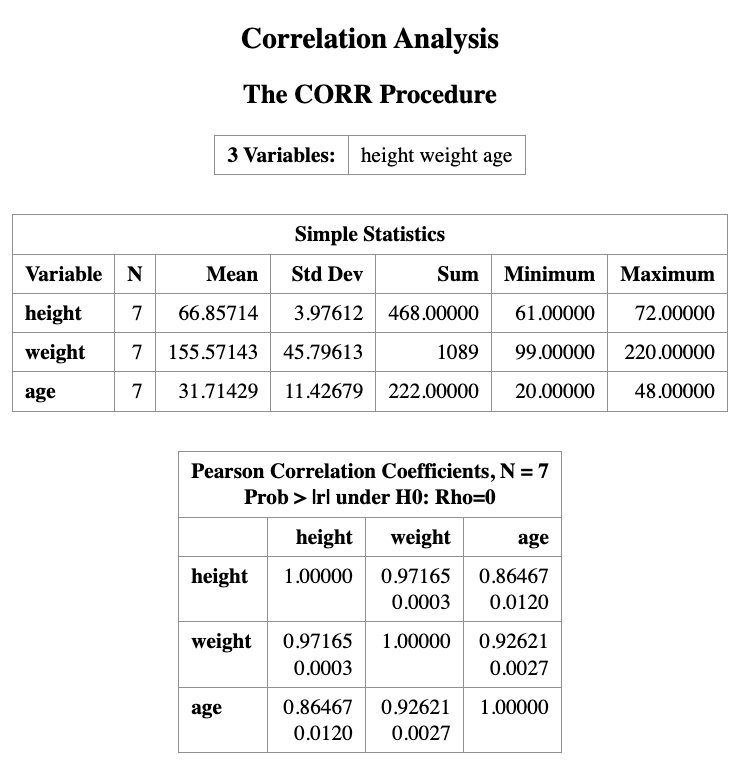
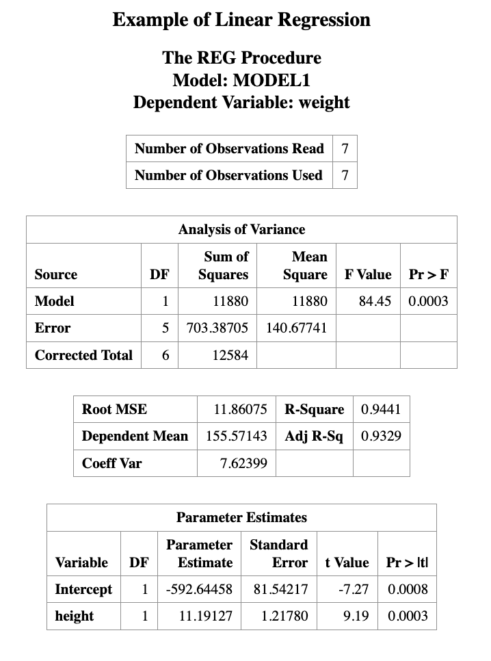
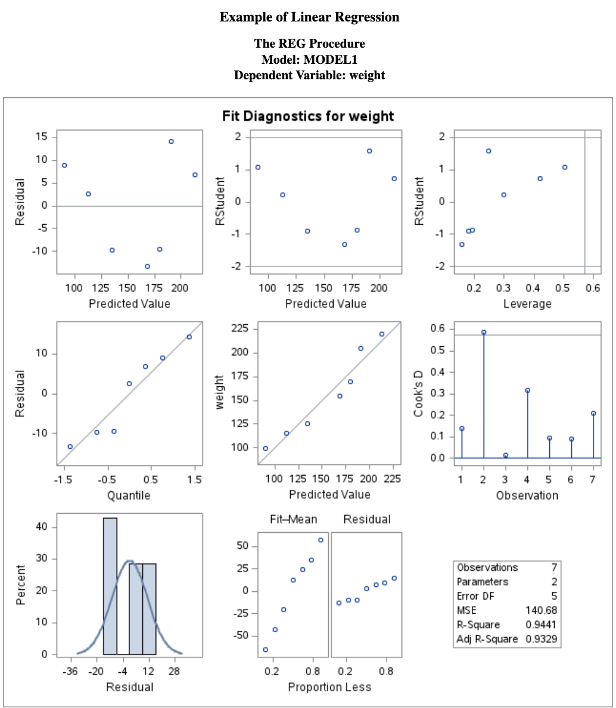
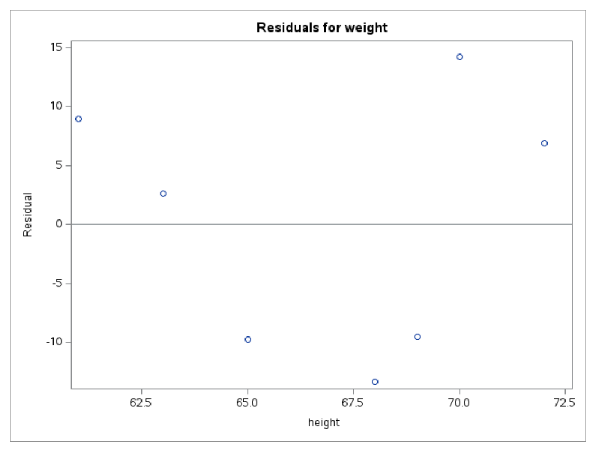
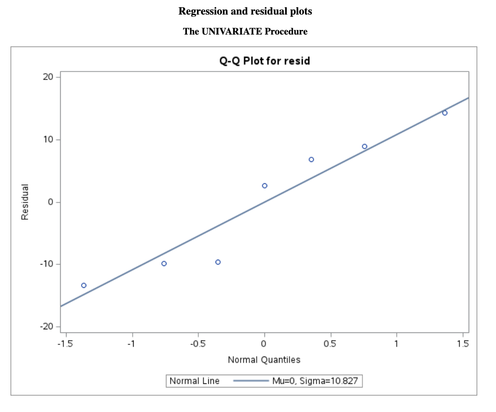
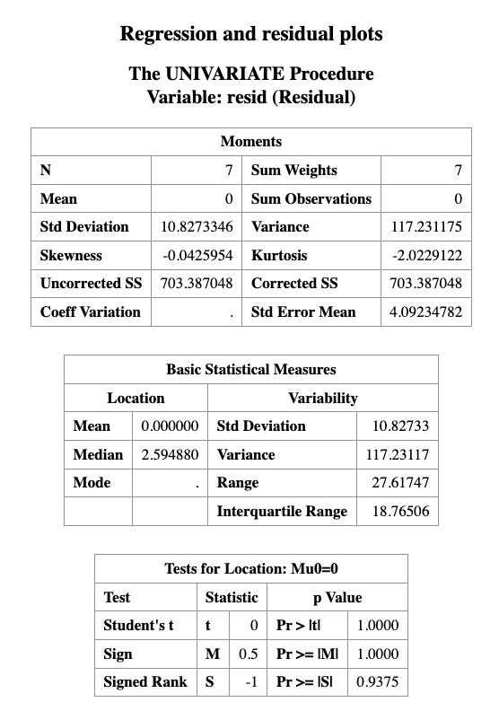
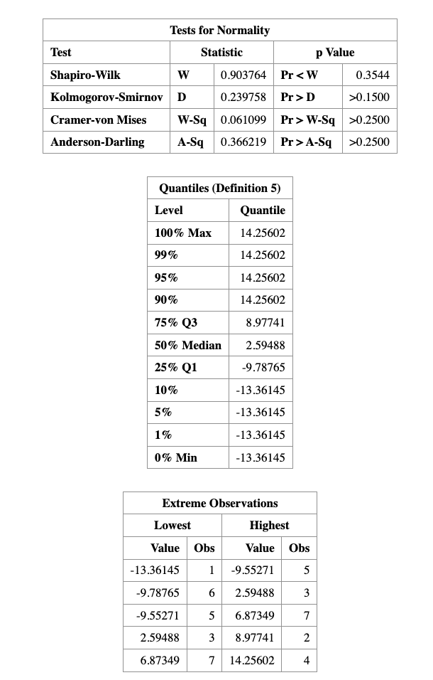

14 Regression Analysis
Learning Objectives
- Understand what regression analysis is.
- Explain the difference between correlation and regression.
- Fit a simple linear regression model.
- Interpret regression coefficients and statistical tests.
- Perform regression analysis in SAS and interpret the output.
- Check the assumptions of linear regression using diagnostic plots.
14.1 Introduction
In many studies, the goal is not only to determine whether variables are related, but also to quantify how one variable influences another.
For example:
- How does height affect weight?
- How does study time affect exam score?
- How does advertising expenditure affect sales?
These types of questions are addressed using regression analysis.
Regression analysis studies the relationship between a dependent variable and one or more independent variables, and can also be used for prediction.
14.2 Correlation vs Regression
Before fitting a regression model, it is often useful to examine the correlation between variables.
Correlation
- Measures the strength and direction of linear association between two variables.
- The correlation coefficient ranges from -1 to 1.
- Correlation is symmetric, meaning it does not distinguish between predictor and response variables.
However:
Correlation does not imply causation.
A strong correlation between two variables does not necessarily mean that one variable causes the other.
Regression analysis goes further by specifying a directional relationship between variables.
14.3 Correlation between Two Variables
Suppose in a health screening, measurements are taken on several individuals:
- Gender
- Height
- Weight
- Age
An example dataset of such is given below.
DATA measurement;
INPUT gender $ height weight age;
DATALINES;
M 68 155 23
F 61 99 20
F 63 115 21
M 70 205 45
M 69 170 35
F 65 125 30
M 72 220 48
;
RUN;To examine the correlation between every paired variables, we can use the PROC CORR procedure in SAS.
PROC CORR DATA=measurement;
TITLE "Correlation Analysis";
VAR height weight age;
RUN;
The output will show the correlation coefficients between each pair of variables, along with the corresponding p-values to test for statistical significance.
The output from PROC CORR provides:
- Descriptive statistics for each variable
- A Pearson correlation matrix
Interpretation of the output
The top number in each cell is the Pearson correlation coefficient, which measures the strength of the linear association between two variables.
The number below it is the p-value for testing
\[ H_0 : \rho = 0 \]
against
\[ H_1 : \rho \ne 0 \]
For example:
- The correlation between height and weight is 0.9716.
- The corresponding p-value is 0.003.
Since the p-value is less than 0.05, we conclude that height and weight are significantly correlated.
The correlation matrix is symmetric along the diagonal line, and each variable has a correlation of 1 with itself.
Important Note
Even when two variables show a strong correlation, this does not necessarily imply a causal relationship.
A strong association may occur because:
- another hidden (confounding) variable influences both variables, or
- the relationship is coincidental.
14.4 Regression in SAS
Suppose our research question is:
to investigate the impact of one variable on another, or to predict the value of one variable based on another.
If this is the case, the regression model can be used to achieve these goals.
In the example dataset, we are interested in studying the relationship between height and weight. For example:
- Does height influence weight?
- Can we predict a person’s weight given their height?
To answer this question, we use a simple linear regression model.
The regression model can be written as
\[ \text{Weight} \sim \text{Height} \]
which means we model weight as a function of height.
14.4.1 Regression Model
The mathematical form of the simple linear regression model is
\[ Y = \beta_0 + \beta_1 X + \epsilon \]
where
- \(Y\) is the dependent variable (weight)
- \(X\) is the independent variable (height)
- \(\beta_0\) is the intercept
- \(\beta_1\) is the slope
- \(\epsilon\) is the random error term
with
\[ \epsilon \sim N(0,\sigma^2). \]
The slope \(\beta_1\) represents the change in the expected value of \(Y\) for a one-unit increase in \(X\).
SAS Implementation
In SAS, we fit the regression model using the PROC REG procedure.
PROC REG DATA=measurement;
TITLE "Example of Linear Regression";
MODEL weight = height;
RUN;In this code:
PROC REGfits a linear regression model.MODEL weight = heightspecifies that weight is the response variable and height is the predictor variable.


14.5 Interpreting the Regression Output
Linear regression assumes that the dependent variable (e.g., \(Y\)) depends linearly on the independent variable (\(X\)).
The simple linear regression model is
\[ Y = \beta_0 + \beta_1 X + \epsilon \]
where
- \(\beta_0\) is the intercept
- \(\beta_1\) is the slope
- \(\epsilon\) is the random error term
with
\[ \epsilon \sim N(0, \sigma^2) \]
The regression output provides estimates for \(\beta_0\) and \(\beta_1\).
In this example, the fitted regression equation is
\[ \text{weight} = -592.64458 + 11.19127 \times \text{height} \]
This equation can be used to predict weight from height.
14.5.1 Example Prediction
For a person who is 70 inches tall, the predicted weight is
\[ \hat{weight} = -592.64458 + 11.19127 \times 70 = 190.66 \]
Thus, the predicted weight for a 70-inch-tall person is approximately 190.66 pounds.
14.5.2 Testing the Slope
In the regression output, the Parameter Estimates table includes the following columns:
- Standard Error
- t Value
- Pr > |t| (p-value)
These values are used to test the hypothesis
\[ H_0 : \beta_1 = 0 \]
which means that the predictor variable has no linear effect on the response variable.
If the p-value is small (e.g., less than 0.05), we reject the null hypothesis.
In this example, the p-value for the slope is 0.0003, which is much smaller than 0.05.
Therefore, we conclude that height has a statistically significant linear effect on weight.
14.6 Assumption Validation for Linear Regression
Linear regression assumes that the relationship between two variables is linear, and that the residuals are normally distributed.
Residuals are defined as
\[ \text{Residual} = Y - \hat{Y} \]
where \(Y\) is the observed value and \(\hat{Y}\) is the predicted value from the regression model.
These assumptions can be checked using scatter plots and residual plots.
The SAS regression procedure also produces several diagnostic figures that help evaluate the model assumptions.
The main diagnostic plots are shown below.
14.6.1 Residual Diagnostics
From the residual plot, we should check the following:
Does the residual plot show an evenly scattered pattern around 0?
A random “white-noise-like” scatter around zero suggests that the linear model fits the data well.
Do the residuals follow a normal distribution?
This can be examined using normality diagnostics, such as a Q–Q plot or formal statistical tests.
The normality of residuals can be checked using the following SAS code:
PROC REG DATA=measurement;
TITLE "Regression and residual plots";
MODEL weight = height;
OUTPUT OUT=myout R=resid;
RUN;
PROC UNIVARIATE DATA=myout NORMAL;
QQPLOT resid / NORMAL(mu=est sigma=est color=red l=1);
RUN;



As we can see that, the \(p\)-value for normality validation is \(0.3544\), which is greater than \(0.05\), so we fail to reject the null hypothesis of normality.